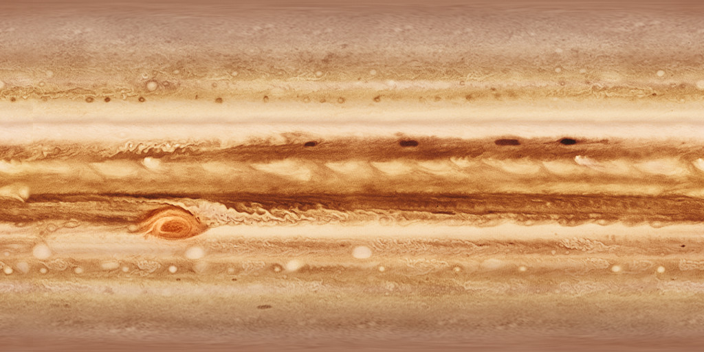
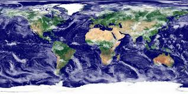
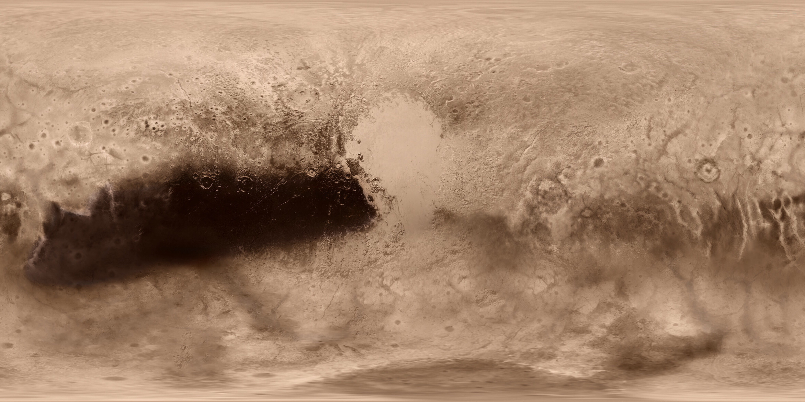
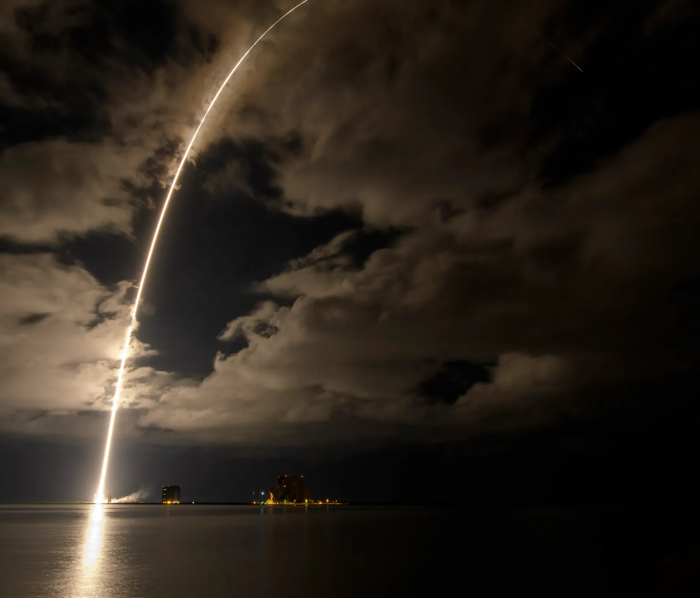
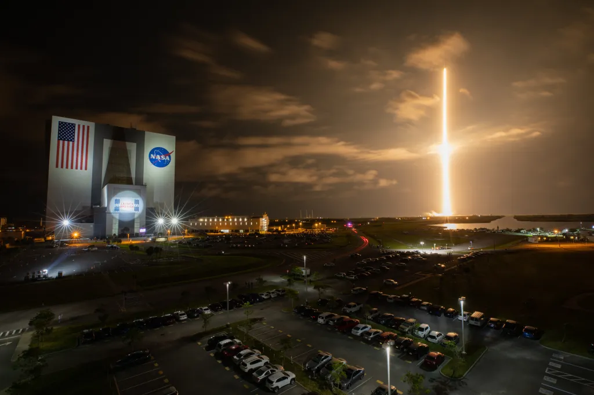

Planet
Simulation


EVENTS
Cosmic History
Explore the origins of the universe and the monumental event that sparked the
creation of everything we know today.
The Universe’s History
The origin, evolution, and nature of the universe have fascinated and confounded humankind for centuries. New ideas and major discoveries made during the 20th century transformed cosmology – the term for the way we conceptualize and study the universe – although much remains unknown. Here is the history of the universe according to cosmologists’ current theories.Cosmic Inflation
Around 13.8 billion years ago, the universe expanded faster than the speed of light for a fraction of a second, a period called cosmic inflation. Scientists aren’t sure what came before inflation or what powered it. It’s possible that energy during this period was just part of the fabric of space-time. Cosmologists think inflation explains many aspects of the universe we observe today, like its flatness, or lack of curvature, on the largest scales. Inflation may have also magnified density differences that naturally occur on space’s smallest, quantum-level scales, which eventually helped form the universe’s large-scale structures.
Big Bang and Nucleosynthesis
When cosmic inflation stopped, the energy driving it transferred to matter and light – the big bang. One second after the big bang, the universe consisted of an extremely hot (18 billion degrees Fahrenheit or 10 billion degrees Celsius) primordial soup of light and particles. In the following minutes, an era called nucleosynthesis, protons and neutrons collided and produced the earliest elements – hydrogen, helium, and traces of lithium and beryllium. After five minutes, most of today’s helium had formed, and the universe had expanded and cooled enough that further element formation stopped. At this point, though, the universe was still too hot for the atomic nuclei of these elements to catch electrons and form complete atoms. The cosmos was opaque because a vast number of electrons created a sort of fog that scattered light.Recombination
Around 380,000 years after the big bang, the universe had cooled enough that atomic nuclei could capture electrons, a period astronomers call the epoch of recombination. This had two major effects on the cosmos. First, with most electrons now bound into atoms, there were no longer enough free ones to completely scatter light, and the cosmic fog cleared. The universe became transparent, and for the first time, light could freely travel over great distances. Second, the formation of these first atoms produced its own light. This glow, still detectable today, is called the cosmic microwave background. It is the oldest light we can observe in the universe.
Heat map of the infant universe
Dark Ages
After the cosmic microwave background, the universe again became opaque at shorter wavelengths due to the absorbing effects of all those hydrogen atoms. For the next 200 million years the universe remained dark. There were no stars to shine. The cosmos at this point consisted of a sea of hydrogen atoms, helium, and trace amounts of heavier elements.First Stars
Gas was not uniformly distributed throughout the universe. Cooler areas of space were lumpier, with denser clouds of gas. As these clumps grew more massive, their gravity attracted additional matter. As they became denser, and more compact, the centers of these clumps became hotter – hot enough eventually that nuclear fusion occurred in their centers. These were the first stars. They were 30 to 300 times more massive than our Sun and millions of times brighter. Over several hundred million years, the first stars collected into the first galaxies.Reionization
At first, starlight couldn’t travel far because it was scattered by the relatively dense gas surrounding the first stars. Gradually, the ultraviolet light emitted by these stars broke down, or ionized, hydrogen atoms in the gas into their constituent electrons and protons. As this reionization progressed, starlight traveled farther, breaking up more and more hydrogen atoms. By the time the universe was 1 billion years old, stars and galaxies had transformed nearly all this gas, making the universe transparent to light as we see it today.The Future
For many years, scientists thought the universe’s current expansion was slowing down. But in fact, cosmic expansion is speeding up. In 1998, astronomers found that certain supernovae, bright stellar explosions, were fainter than expected. They concluded this could only happen if the supernovae had moved farther away, at a faster rate than predicted.Scientists suspect a mysterious substance they call dark energy is accelerating expansion. Future research may yield new surprises, but cosmologists suggest it’s likely the universe will continue to expand forever.
Black Holes
Explore the mysteries of black holes and the monumental forces that shape the
universe as we know it.
The Universe’s History
The origin, evolution, and nature of the universe have fascinated and confounded humankind for centuries. New ideas and major discoveries made during the 20th century transformed cosmology – the term for the way we conceptualize and study the universe – although much remains unknown. Here is the history of the universe according to cosmologists’ current theories.Cosmic Inflation
Around 13.8 billion years ago, the universe expanded faster than the speed of light for a fraction of a second, a period called cosmic inflation. Scientists aren’t sure what came before inflation or what powered it. It’s possible that energy during this period was just part of the fabric of space-time. Cosmologists think inflation explains many aspects of the universe we observe today, like its flatness, or lack of curvature, on the largest scales. Inflation may have also magnified density differences that naturally occur on space’s smallest, quantum-level scales, which eventually helped form the universe’s large-scale structures.
Big Bang and Nucleosynthesis
When cosmic inflation stopped, the energy driving it transferred to matter and light – the big bang. One second after the big bang, the universe consisted of an extremely hot (18 billion degrees Fahrenheit or 10 billion degrees Celsius) primordial soup of light and particles. In the following minutes, an era called nucleosynthesis, protons and neutrons collided and produced the earliest elements – hydrogen, helium, and traces of lithium and beryllium. After five minutes, most of today’s helium had formed, and the universe had expanded and cooled enough that further element formation stopped. At this point, though, the universe was still too hot for the atomic nuclei of these elements to catch electrons and form complete atoms. The cosmos was opaque because a vast number of electrons created a sort of fog that scattered light.Recombination
Around 380,000 years after the big bang, the universe had cooled enough that atomic nuclei could capture electrons, a period astronomers call the epoch of recombination. This had two major effects on the cosmos. First, with most electrons now bound into atoms, there were no longer enough free ones to completely scatter light, and the cosmic fog cleared. The universe became transparent, and for the first time, light could freely travel over great distances. Second, the formation of these first atoms produced its own light. This glow, still detectable today, is called the cosmic microwave background. It is the oldest light we can observe in the universe.
Heat map of the infant universe
Dark Ages
After the cosmic microwave background, the universe again became opaque at shorter wavelengths due to the absorbing effects of all those hydrogen atoms. For the next 200 million years the universe remained dark. There were no stars to shine. The cosmos at this point consisted of a sea of hydrogen atoms, helium, and trace amounts of heavier elements.First Stars
Gas was not uniformly distributed throughout the universe. Cooler areas of space were lumpier, with denser clouds of gas. As these clumps grew more massive, their gravity attracted additional matter. As they became denser, and more compact, the centers of these clumps became hotter – hot enough eventually that nuclear fusion occurred in their centers. These were the first stars. They were 30 to 300 times more massive than our Sun and millions of times brighter. Over several hundred million years, the first stars collected into the first galaxies.Reionization
At first, starlight couldn’t travel far because it was scattered by the relatively dense gas surrounding the first stars. Gradually, the ultraviolet light emitted by these stars broke down, or ionized, hydrogen atoms in the gas into their constituent electrons and protons. As this reionization progressed, starlight traveled farther, breaking up more and more hydrogen atoms. By the time the universe was 1 billion years old, stars and galaxies had transformed nearly all this gas, making the universe transparent to light as we see it today.The Future
For many years, scientists thought the universe’s current expansion was slowing down. But in fact, cosmic expansion is speeding up. In 1998, astronomers found that certain supernovae, bright stellar explosions, were fainter than expected. They concluded this could only happen if the supernovae had moved farther away, at a faster rate than predicted.Scientists suspect a mysterious substance they call dark energy is accelerating expansion. Future research may yield new surprises, but cosmologists suggest it’s likely the universe will continue to expand forever.
Stars Stories
Which star and planet do you want to explore?

Sao hỏa
Astronomers have directed NASA's James Webb Space Telescope to examine the outskirts of our Milky Way galaxy...test cái xem nó để 3 ròng được không thêm tí nữa đi
Read MoreArticle - 1 week ago

Sao thổ
Astronomers have directed NASA's James Webb Space Telescope to examine the outskirts of our Milky Way galaxy...
Read MoreArticle - 1 week ago

Sao Kim
Astronomers have directed NASA's James Webb Space Telescope to examine the outskirts of our Milky Way galaxy...
Read MoreArticle - 1 week ago

Trái đất
Astronomers have directed NASA's James Webb Space Telescope to examine the outskirts of our Milky Way galaxy...
Read MoreArticle - 1 week ago
Mặt trăng
Astronomers have directed NASA's James Webb Space Telescope to examine the outskirts of our Milky Way galaxy...
Read MoreArticle - 1 week ago
Mặt Người
Astronomers have directed NASA's James Webb Space Telescope to examine the outskirts of our Milky Way galaxy...
Read MoreArticle - 1 week ago
.png)
The Astronaut's Voyage to
Explore the Stars
Destinations
Earth, Moon, and Mars
With more than 20 years of operations in low Earth orbit, we are preparing our return to the Moon for long-term exploration and discovery before taking the next giant leap to Mars.
Never has humanity endeavored to simultaneously architect multinational infrastructures in lunar orbit, on the lunar surface, and at Mars — all while maintaining high-demand government and private-sector operations in low Earth orbit.
On flight day 13, Orion reached its maximum distance from Earth during the Artemis I mission when it was 268,563 miles away from our home planet. Orion has now traveled farther than any other spacecraft built for humans.
Why Go to Space?
Exploring the universe, like exploring Earth, stems from the human desire to gain knowledge, find resources, and improve life.Why Go to Space
Human space exploration answers fundamental questions about our place in the universe and solar system history.
Exploration of Jupiter and its moons is crucial for understanding our solar system.
Exploration vision is anchored in providing value for humanity by answering some of the most fundamental questions: Why are we here? How did it all begin? Are we alone? What comes next?
This illustration shows Cassini spacecraft in orbit around Saturn. Cassini made 22 orbits that swooped between the rings and the planet before ending its mission on Sept. 15, 2017, with a final plunge into Saturn.
Spaceships and Rockets
Learn more about spaceships and rockets enabled by NASA.Spaceships and Rockets
What is a rocket?
A rocket is used to carry a spacecraft from Earth’s surface to space, usually to low Earth orbit or beyond, and is sometimes called a launch vehicle.
Although rockets may appear similar, no two are alike because they are complex devices with millions of pieces and systems that must be calculated and constructed to work together. A rocket is chosen based on the spacecraft’s mission requirements. For example, the farther away from Earth the spacecraft needs to go, the bigger and more powerful the rocket needs to be.

A United Launch Alliance Atlas V rocket with the Lucy spacecraft aboard is seen in this 2 minute and 30 second exposure photograph as it launches from Space Launch Complex 41, Saturday, Oct. 16, 2021, at Cape Canaveral Space Force Station in Florida. NASA/Bill Ingalls
Commercial Crew Rockets
These commercial rockets are launching crews to low Earth orbit through partnerships with NASA.
A new generation of rockets capable of carrying astronauts to low Earth orbit and the International Space Station provides expanded utility, additional research time, and broader opportunities for discovery on the orbiting laboratory.

With a view of the iconic Vehicle Assembly Building at left, a SpaceX Falcon 9 rocket soars upward from Launch Complex 39A at NASA’s Kennedy Space Center in Florida on April 23, 2021, carrying the company’s Crew Dragon Endeavour capsule.
Commercial Resupply Rockets
These commercial rockets are launching crews to low Earth orbit through partnerships with NASA.
A new generation of rockets capable of carrying astronauts to low Earth orbit and the International Space Station provides expanded utility, additional research time, and broader opportunities for discovery on the orbiting laboratory.With a view of the iconic Vehicle Assembly Building at left, a SpaceX Falcon 9 rocket soars upward from Launch Complex 39A at NASA’s Kennedy Space Center in Florida on April 23, 2021, carrying the company’s Crew Dragon Endeavour capsule.
Unmanned Rocket
These commercial rockets are launching crews to low Earth orbit through partnerships with NASA.
A new generation of rockets capable of carrying astronauts to low Earth orbit and the International Space Station provides expanded utility, additional research time, and broader opportunities for discovery on the orbiting laboratory.With a view of the iconic Vehicle Assembly Building at left, a SpaceX Falcon 9 rocket soars upward from Launch Complex 39A at NASA’s Kennedy Space Center in Florida on April 23, 2021, carrying the company’s Crew Dragon Endeavour capsule.
Orion Spacecraft
The reasons to explore the universe are as varied as those for exploring Earth: to learn, discover resources, and improve life.Spaceships and Rockets
What is a spacecraft?
A spacecraft is a vehicle that flies in space. It can carry astronauts, cargo, or instruments to their destination, or it can be the destination. The International Space Station is a spacecraft, just like the smaller vehicles that deliver crew and cargo to it.
Spacecraft launch on rockets and have their own propulsion and navigation systems that take over after they separate from the rocket, propelling them to other worlds in our solar system. Their main purpose lies in transporting payloads — or anything within the vehicle beyond what is essential to operate in space — to their destination. For example, for the Artemis II Moon mission, a human crew and other experiments will be carried aboard the Orion spacecraft.
This illustration shows Cassini spacecraft in orbit around Saturn. Cassini made 22 orbits that swooped between the rings and the planet before ending its mission on Sept. 15, 2017, with a final plunge into Saturn.
Commercial Cargo Spacecraft
These commercial rockets are launching crews to low Earth orbit through partnerstation with NASA.
A new generation of rockets capable of carrying astronauts to low Earth orbit and the International Space Station provides expanded utility, additional research time, and broader opportunities for discovery on the orbiting laboratory.With a view of the iconic Vehicle Assembly Building at left, a SpaceX Falcon 9 rocket soars upward from Launch Complex 39A at NASA’s Kennedy Space Center in Florida on April 23, 2021, carrying the company’s Crew Dragon Endeavour capsule.
Commercial Crew Spacecraft
These commercial rockets are launching crews to low Earth orbit through partnerstation with NASA.
A new generation of rockets capable of carrying astronauts to low Earth orbit and the International Space Station provides expanded utility, additional research time, and broader opportunities for discovery on the orbiting laboratory.With a view of the iconic Vehicle Assembly Building at left, a SpaceX Falcon 9 rocket soars upward from Launch Complex 39A at NASA’s Kennedy Space Center in Florida on April 23, 2021, carrying the company’s Crew Dragon Endeavour capsule.
International Partner Rockets and Spacecraft
These commercial rockets are launching crews to low Earth orbit through partnerships with NASA.
A new generation of rockets capable of carrying astronauts to low Earth orbit and the International Space Station provides expanded utility, additional research time, and broader opportunities for discovery on the orbiting laboratory.With a view of the iconic Vehicle Assembly Building at left, a SpaceX Falcon 9 rocket soars upward from Launch Complex 39A at NASA’s Kennedy Space Center in Florida on April 23, 2021, carrying the company’s Crew Dragon Endeavour capsule.